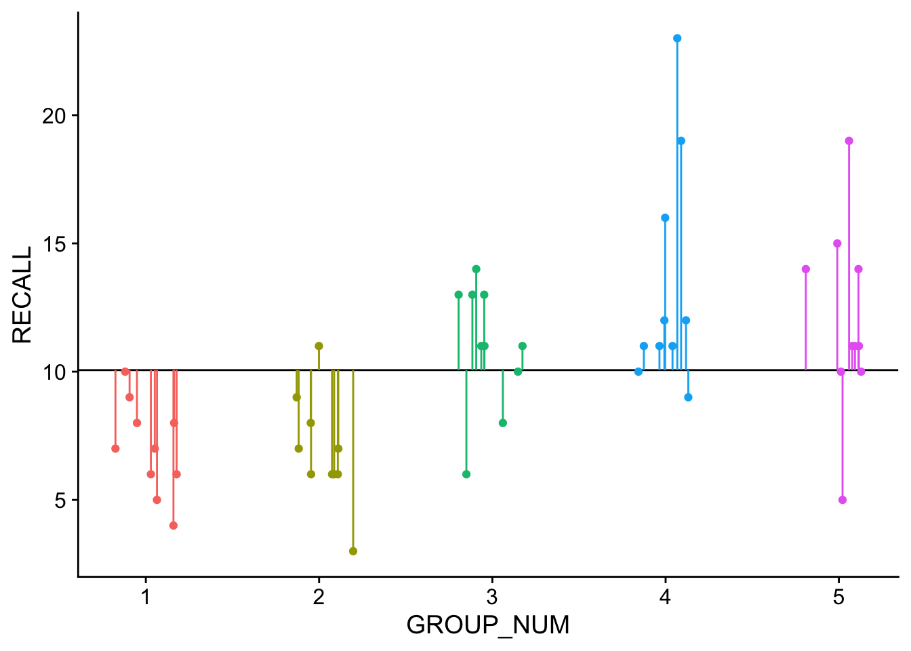
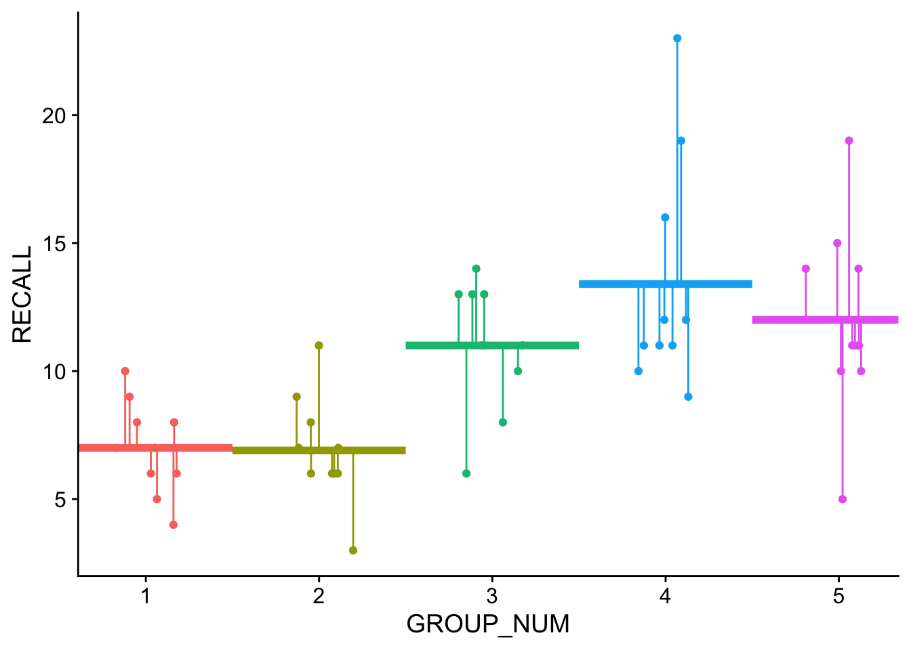

pacman::p_load(tidyverse,
broom,
cowplot,
ungeviz,
ggpmisc)33 ANOVA and Regression
This walkthrough assumes you have the following installed and loaded:
33.1 Means method v. Regression method
Admittedly I’m anticipating some work that we will be doing in a few weeks, but I wanted to take some time to circle back around to a few points from our class discussion, the previous walkthrough and our lectures on regression. I’ve repeatedly commented on how ANOVA and Regression are indeed one in the same. In the previous walkthrough we performed ANOVA using both a dedicated function aov() as well as the same function we used a few weeks back for regression lm(). In doing so, we also noted how the \(F\) statistic calculated by aov() is the same that’s calculated for lm() (and those of you that can remember all the way back to the regression week that you were asked to report your \(F\) value along with your \(R^2\) in your regression results when talking about the fit of the overall model.
By now you may ask: “Well, if ANOVA is simply linear regression then why involve different functions?” To add insult to injury, would you be even more peeved if I told you that the \(F\) statistic for regression is calculated differently from the \(F\) statistic for ANOVA, even though they give you the exact same result!!! Ugh… Why, WHY?!?!?!, WHYYYYY?!?!?!?!?!
Sadly, tradition and convention are all I can tell you. While in both cases the \(F\) value or ratio is an expression of amount of variance that your model (lm or aov) explains given total variance that exists in the data. In the ANOVA case we are concerned with the means of discrete groups or IVs. Since lm deals with continuous predictors (or IVs) then it makes little sense to talk about means, other than the grand mean. In both instances, however, the derived \(F\) is an expression of the model’s fit.
My goal for this section is to demonstrate to you that the regression method we used to derive the the \(F\) ratios during our week on regression is identical to the means method Cohen introduced you to this week. First to recap the regression method, our equation from the correlation week’s lecture slides was:
\[F=\frac{r^2 / df_{reg}}{(1-r^2)/df_{res}}\]
- where \(r^2\) is the model’s coefficient of determination
- \(df_{reg}\): the model’s \(df\) (based on # of predictors), and
- \(df_{res}\): the model’s residual \(df\)
moreover,
\[r^2=\frac{SS_Y-SS_{res}}{SS_Y}\]
- where \(SS_Y\) is the sum of squared differences between the observed values \(Y\) and the grand mean \(\bar{Y}\)
- \(SS_{res}\) is the sum of squared differences between the observed values \(Y\) and the model-predicted values \(\hat{Y}\) (or distance to regression line).
For those of you interested in reading further on the mathematics, pay close attention to the Flora chapter assigned this week.
33.1.1 Comparing two models
To conceptualize lets take another look at our data again. But first it might help to take another look at my earlier spiel on means and other models here and our related discussion on t-tests as linear models here.
Go ahead, I’ll wait…
OK, now that you’re back let’s have another look at our example data from the previous walkthrough. First let’s read in the clean dataset from walkthrough 1
dataset <- read_rds('clean_dataset.rds')In the plot below, the dotted line represents the grand_mean model, where we are using the mean of all data to predict individual scores. This corresponds to our assumption that all samples come from the same population and are randomly distributed (aka random error). It is from this means model that \(SS_Y\) is calculated.
Visually the means model looks like this:
ggplot(data = dataset,mapping = aes(x = GROUP_NUM, y = RECALL, col=factor(GROUP_NUM))) +
geom_hline(yintercept=mean(dataset$RECALL)) +
geom_point(position = position_jitter(height = 0L, seed = 1L, width=0.2)) +
geom_linerange(aes(x=GROUP_NUM, ymax=RECALL, ymin=mean(dataset$RECALL)),
position = position_jitter(height = 0L, seed = 1L, width=0.2)) +
theme_cowplot() +
theme(legend.position = "none")Warning: Use of `dataset$RECALL` is discouraged.
ℹ Use `RECALL` instead.
The solid line represents the mean of the entire dataset, or the grand mean. Each of our groups are color coded and the lines connecting the data points to the grand mean are the residuals. We can express the grand means model as:
grand_mean_model <- lm(RECALL~1, data = dataset)
# Here, "1"" indicates assume scores simply vary randomly about the grand meanFurther \(SS_Y\) is simply the sum of the squared residuals:
SS_Y <- sum(grand_mean_model$residuals^2)
SS_Y[1] 786.82In contrast, the group_means model represents the model (line) of best fit for our ANOVA model which, in addition to assuming random error about the grand mean, also assumes that GROUP (encoding) is a predictor of variation that we see in the data (aka systematic error). Its from this model which \(SS_{res}\) is calculated. This model may be expressed:
# add GROUP as a predictor to our grand means model (RECALL~1)
group_means_model <- lm(RECALL~1 + GROUP_FACTOR, data = dataset)
# also shorthand
# group_means_model <- lm(RECALL~1 + GROUP_FACTOR, data = dataset)and visualized as:
# add group predicteds for plotting
dataset$group_predicteds <- group_means_model$fitted
ggplot(data = dataset,mapping = aes(x = GROUP_NUM, y = RECALL, col=factor(GROUP_NUM))) +
geom_point(position = position_jitter(height = 0L, seed = 1L, width=0.2)) +
stat_summary(geom = "hpline", width = 1, size = 1.5, fun="mean") +
geom_linerange(aes(x=GROUP_NUM, ymax=RECALL, ymin=group_predicteds),
position = position_jitter(height = 0L, seed = 1L, width=0.2)) +
theme_cowplot() +
theme(legend.position = "none")Warning: Using the `size` aesthetic in this geom was deprecated in ggplot2 3.4.0.
ℹ Please use `linewidth` in the `default_aes` field and elsewhere instead.
Note that the horizontal lines are the predicted values in this model… the group means.
The resulting sum of squares for this model \(SS_{res}\) is:
SS_res <- sum(group_means_model$residuals^2)
SS_res[1] 435.3Thus \(R^2\) is simply a statement about the difference in the grand mean model and the experimental model (in this case our ANOVA model with GROUP predictor) residuals as a percentage of \(SS_Y\). Looking at the \(R^2\) of the group_means_model show us that it is .4468.
broom::glance(group_means_model)# A tibble: 1 × 12
r.squared adj.r.squared sigma statistic p.value df logLik AIC BIC
<dbl> <dbl> <dbl> <dbl> <dbl> <dbl> <dbl> <dbl> <dbl>
1 0.447 0.398 3.11 9.08 0.0000182 4 -125. 262. 274.
# ℹ 3 more variables: deviance <dbl>, df.residual <int>, nobs <int>\(R^2\) as calculated from our SS_res and SS_Y:
r2 <- (SS_Y-SS_res)/SS_Y
r2[1] 0.4467604Given this value we can calculate the \(F\)-ratio using the equation above, noting that the model’s degrees of freedom based on the number of predictors = \(df_{reg}\) = 4 and the model’s residual degrees of freedom = \(df_{res}\) = 45 (more on this below)
f_ratio <- (r2/4)/((1-r2)/45)
f_ratio[1] 9.084769In addition, with ANOVA we are dealing with discrete predictors rather than continuous. Visually, as you can see that the data in the plot are stacked into columns, with the mean of each group located at the center of the columns’ density. This also means that rather than a continuous range of predicted values \(\hat{Y}\) we have a set number of \(\hat{Y}\), one for each group mean that we are considering in the ANOVA. Therefore:
- \(SS_Y\) may be thought of in terms of the differences between every score compared to the grand mean.
- \(SS_{res}\) may be thought of as the differences between every score within the group and the group mean \(\hat{Y}\)
To put it more succinctly, with ANOVA we are directly comparing our GROUP predictor model’s ability to account for variance in the data above what we might expect by chance. Unpacking this a bit, we have a grand_mean model and a group_mean model. As you will see in a few weeks we can use a Likelihood Ratio Test to directly compare to models to see if the second accounts for significantly more variance than the first. In R this is accomplished using…. dun, dun, dun anova():
# Here, "1"" indicates let scores simply vary randomly
grand_mean_model <- lm(RECALL~1, data = dataset)
# add GROUP as a predictor to our original model
group_means_model <- lm(RECALL~1 + GROUP_FACTOR, data = dataset)
# run Likelihood Ratio Test to compare two models
anova(grand_mean_model, group_means_model, test="LRT")Analysis of Variance Table
Model 1: RECALL ~ 1
Model 2: RECALL ~ 1 + GROUP_FACTOR
Res.Df RSS Df Sum of Sq Pr(>Chi)
1 49 786.82
2 45 435.30 4 351.52 2.464e-07 ***
---
Signif. codes: 0 '***' 0.001 '**' 0.01 '*' 0.05 '.' 0.1 ' ' 1The output above tells you the structure (formula) of each model and that Model 2 accounts for significantly more variance than Model 1 (as assessed on the Chi-sq. distribution). For what it’s worth, let’s run this same comparison of models using a different test, F:
# run Likelihood Ratio Test to compare two models
anova(grand_mean_model, group_means_model, test="F")Analysis of Variance Table
Model 1: RECALL ~ 1
Model 2: RECALL ~ 1 + GROUP_FACTOR
Res.Df RSS Df Sum of Sq F Pr(>F)
1 49 786.82
2 45 435.30 4 351.52 9.0848 1.815e-05 ***
---
Signif. codes: 0 '***' 0.001 '**' 0.01 '*' 0.05 '.' 0.1 ' ' 1Those numbers look familiar (df and F)? What does that suggest is really going on with ANOVA?
33.1.2 Means method calculations
Now lets turn to our F-ratio equation for the means method:
\[F=\frac{MS_{bet}}{MS_{error}}\]
where
- \(MS_{error}\) = \(SS_{res}/df_{res}\)
- and \(MS_{bet}\) = (\((SS_{Y}-SS_{res})/df_{reg}\);
note that \(df_{res}\) may be calculated as \(k(n-1)\) where \(k\) is the number of IV and \(n\) is the number of scores in each group; \(df_{reg}\) is \(k-1\).
so for our model, aov_model (our ANOVA) we can calculate the F-ratio using the means method as follows:
aov_model <- aov(RECALL~GROUP_FACTOR,dataset)
# calculate TSS from grand mean residuals
SS_Y <- ((dataset$RECALL-mean(dataset$RECALL))^2) %>% sum()
# calculate RSS from model residuals (group means compared to grand mean)
SS_res <- (aov_model$residuals^2) %>% sum()
k <- 5 # predictors
n <- 10 # number in each group
# between df
df_reg <- k-1
# within df
df_res <- k*(n-1)
# MS treatments
MS_treat <- (SS_Y-SS_res)/df_reg
# MS error
MS_error <- SS_res/df_res
F.ratio <- (MS_treat/MS_error) %>% print()[1] 9.08476933.2 Bringing it together: it’s all about the residuals, baby
So on one hand we have the F-ratio being calculated using \(r^2\) and on the other we have it being calculated using the mean square. Underlying both is a calculation of various \(SS\) and it is using this fact that we can show that the two methods are equivalent. Drawn out, we have on the left our \(r^2\) calculation and on the right the mean square calculation:
\[F=\frac{r^2 / df_{reg}}{(1-r^2)/df_{res}} =\frac{MS_{bet}}{MS_{error}}\]
rewriting our \(r^2\) in terms of \(SS\) (sums of squares) we get:
\[\frac{\frac{SS_Y-SS_{res}}{SS_Y} / df_{reg}}{(1-\frac{SS_Y-SS_{res}}{SS_Y})/df_{res}} =\frac{MS_{bet}}{MS_{error}}\]
and rewriting our \(MS\) side of the equation in terms of \(SS\): \[\frac{\frac{SS_Y-SS_{res}}{SS_Y} / df_{reg}}{(1-\frac{SS_Y-SS_{res}}{SS_Y})/df_{res}} =\frac{(SS_{Y}-SS_{res})/df_{reg}}{SS_{res}/df_{res}}\]
multiplying the left side of the equation by 1, or \(\frac{SS_Y}{SS_Y}\):
\[\frac{(SS_Y-SS_{res}) / df_{reg}}{(SS_Y-(SS_Y-SS_{res}))/df_{res}} =\frac{(SS_{Y}-SS_{res})/df_{reg}}{SS_{res}/df_{res}}\]
which gives us:
\[\frac{(SS_{Y}-SS_{res})/df_{reg}}{SS_{res}/df_{res}}=\frac{(SS_{Y}-SS_{res})/df_{reg}}{SS_{res}/df_{res}}\]
See… told you… SAME DAMN THING!
What does this mean for you… well perhaps nothing. Honestly, if you are using your computer for stats a correct calculation is a correct calculation. However, conceptually it may be easier to get and keep yourself in general linear model mode, as it will make incorporating more complex modeling techniques (higher-order ANOVA, ANCOVA, mixed-models, multi-level models, growth curve models) a more intuitive step in the future.
33.3 CRITICAL POINT: unpacking those residuals, baby
In class I asked you to note two very important ideas, one in the context of ANOVA and the other for regression. For ANOVA, we noted that:
- the null hypothesis for ANOVA is that the mean scores of all sample groups are equal to one another
- mathematically, that if the null hypothesis is true, then each of the group means are not only equal to one another, but to the grand mean of the scores from all combined groups (mean of dumping everyone’s score together)
Taking a look a the previous section, \(SS_Y\) (aka, Total Sum of Squares) are the residuals with respect to the grand mean of all groups. In other words, these are the amount of error / residuals that you would expect if the null hypothesis was TRUE!!!. Tying this more explicitly to some of the terminology that we used in lecture for ANOVA (the variance ratio method), these residuals represent what you would expect our within-groups variability to be if the null hypothesis is true (that is the null hypothesis assumes that all of this data comes from a single group… your hypothesis test is designed to refute that notion).
\(SS_{res}\) represents the within group residuals related to a model that assumes group differences. That is this is what the within residuals look like when each data point is tied to a particular group mean, instead of the grand mean. When the null hypothesis is true, \(SS_{res} = SS_Y\). The further you group means are from one another, the further \(SS_{res}\) decreases from \(SS_Y\). In the variance-ratio terminology, the further the \(MS_{error}\) gets from the Total Sum of Squares (MS) as is the random variation in data points (error) moves from being accounted for by the grand mean to the individual means. In turn, this suggests that the differences in individual means is sucking-up some of that random variance (i.e. has some explanatory value). The amount of the variation that the group means accounts for can be taken be taking the \(SS_Y\) from the null hypothesis residuals and subtracting the \(SS_{res}\) from the group predictor residuals. What remains are the residuals accounted for by mean differences! These are the residuals for our effect (\(MS_{bet}\)). In the context of ANOVA these raw sums of squares are understood in terms of the degrees of freedom for our predictors and groups… the mean squares (MS) are the sums of squares divided be the appropriate degrees of freedom.
Ideally we want the residuals tied to our effect (\(MS_{bet}\)) to be greater than the random variance left over \(MS_{error}\) which is why we evaluate the resulting F-ratio \(\frac{MS_{bet}}{MS_{error}}\) in terms of being “how much greater than 1”. To put this into terms that we are familiar with from the our discussions of Effect Size, our between groups effect is our signal, and the random within groups variation is our noise.
If you are looking at this video, https://youtu.be/YrFehOKUJBw, and working with the accompanying excel file, the gist is the further the results of the Within SS box are from the Total SS box, to more likely you are to get a significant effect (the greater the Between SS box).
FWIW, this logic also applies to regression, where:
- the null hypothesis is that the predictive model accounts for no variance (\(r^2\) = 0).
- in a simple regression this would also mean that the \(beta\) coefficient representing your slope would also be zero, with an intercept at, wait for it… the grand mean!!
From here everything plays out as above, beginning with the initial residuals, \(SS_Y\) or (TSS) being based upon the grand mean, and the \(SS_{res}\) being those residuals around the line of best fit.
Hope this helps understand what’s going on behind the scenes!
See you next week!